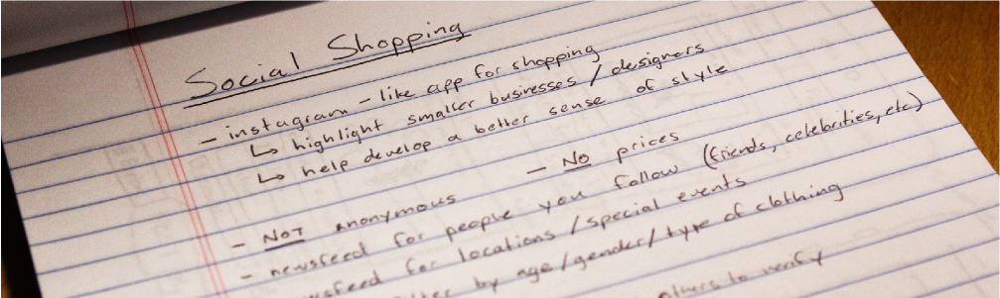
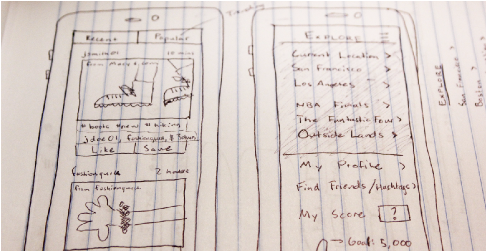
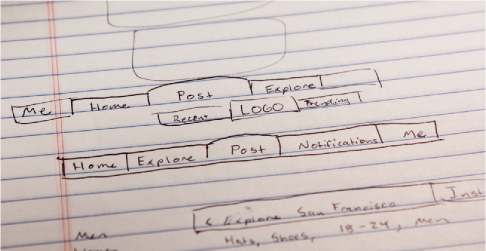
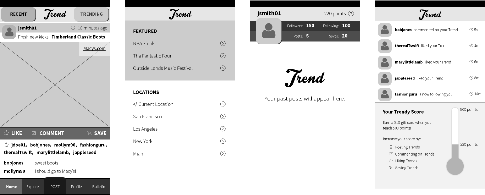

The initial version is location-based, and users can filter between recent and popular posts, much like Yik Yak. Trend includes a feature to “explore” fashion styles in different locations, at certain events, or in upcoming movies.


I began sketching out the main newsfeed and navigation bar for the app. From these sketches, I used Illustrator to turn these sketches into wireframes. I uploaded these wireframes to InVision and created a clickable prototype. I sent this clickable prototype to four of my friends and asked them a number of questions about how they might use the app and if the navigation was easy to understand.
